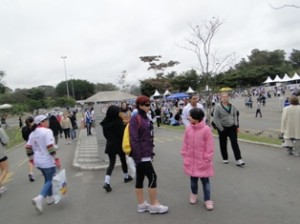
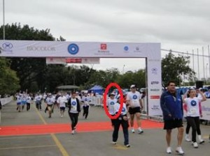

Cia. Ex-sedentário
vamo, vamo, vamo…
Â
       Por ser solidária na quarta (11/08) acordei com a garganta raspando e a noite a gripe manifestou com muita coriza e espirros (peguei do maridão) e como temperatura se manteve baixa durante a semana, a gripe persistiu.
        Como a previsão do tempo para o final de semana (14 e 15/08) seria de queda de temperatura em Sampa, sábado o dia foi frio e acordei com um pouco de tosse, o que me deixou preocupada, domingo precisaria estar um pouco melhor para a corrida.
        Domingo, acordamos as 6 hs, e ouvi que a temperatura estava em 8º C (mas a sensação térmica devia estar em torno de 6º) e a máxima chegaria aos  14º. Já estava um pouco melhor, a tosse tinha melhorado, mas os sintomas da gripe ainda permaneciam. Ao sair de casa as 7 hs não senti tanto frio, estava com uma jaqueta grossa . O transito estava super tranqüilo, chegamos na Assembléia Legislativa as 7hs15min, com tempo mais que suficiente para alongamentos.Â
        O frio……….. fez com que eu só tirasse minha jaqueta minutos antes da corrida para poder aclimatar meu corpo…….. foi quando coloquei aqueles adesivos de dilatação no nariz para poder respirar melhor.
         Sylvia quis correr comigo, mas ficou receosa de não poder participar e por outro lado ela estava capotada de roupas, achei por bem deixá-la com o pai aguardando minha chegada. Estou despertando nela o gostinho pela corrida (já estou de olho em 2 corridas kids para inscrevê-la), mas acho que correr ao meu lado deve ter um sabor especial, tanto que ela me disse que se não conseguisse seguir minhas passadas que não ficasse preocupada que ela iria caminhando. Muito bom essa cumplicidade, é massagear o ego de mãe em saber que estamos influenciando nossas crias, naquilo que é bom, saudável, fazer o bem para receber o bem.
        Deixei o marido e a Sy e me dirigindo para o inÍcio da prova. Dada a largada o frio ficou para trás, passei por um desses relógios de rua que indicava 8ºC. Durante a corrida tive um pouco de coriza mas deu para levar. O tempo continuava frio, sem perspectiva de melhora.
        Desta vez os 5 km pareceram uma corrida longa, tanto que quando vi a placa de 1km achei que tivesse percorrido mais metros……..ainda estou alternando entre corrida e caminhadas fortes, mas ao avistar a placa de 4 km corri com mais força e quando avistei o portal da chegada fiquei a procura da famÍlia (eles estavam logo depois do tapete vermelho da chegada). Cruzei a chegada e o cronometro do portal acusava 46min11seg.
        Depois de entregar o chip e pegar minha medalha de participação fui ao encontro de minha famÍlia……….. , Sy além do seu casaco vestia minha jaqueta, o marido estava com os olhos lacrimejando (ainda estava gripado), como eles ficaram parados durante a minha corrida pude perceber o quanto estava frio. Logo comecei a espirrar e a tossir, meu nariz ardia muito, não via a hora de chegar em casa e ficar debaixo das cobertas. Era realmente um domingo tÍpico para ficar nas cobertas.
        A noitinha fiquei procurando o resultado da corrida e, fiquei muito frustrada quando os sites diziam que o resultado somente seria divulgado em 72 hs……….. somente hoje no final da tarde saiu meu resultado: tempo lÍquido de 00:44:11.
        Para quem ainda não saiu do sedentarismo (estou fazendo das provas meus treinos) ainda chego lá….
       Â

Antes da corrida

Chegada!!!
Olha a medalha aqui!!! (ihhhhhhhhh, mostrei o verso)

Missão cumprida, voltando para casa.
Estou relendo o livro do Dean Kernazes (50…), mas a lição da madrugada que me rendeu um treino profÍcuo e gostoso eu tirei do último post do meu ultra-amigão Alex: o Garoto Taleqx. Lá naquele hot-site que meu roubou o primo, o Alecão descreveu que depois de vinte minutos de trote lento e contÍnuo e sentiu aquele gostinho único que a atividade fÍsica nos oferece e se amaldiçoou por não se permitir a isso mais vezes.
No último mês tenho patinado muito nos treinos piritubanos procurando à s pressas um condicionamento perdido. Se eu tivesse curtido mais e procurado menos, ele (o condicionamento) teria vindo ao meu encontro rapidinho. Ao me lembrar da nova lição do Alex, à s 04:50 horas, quando soltei o timer (1h). Deixei o trote me levar. Foi ótimo, porque me aqueci no tempo certo e o frio que fazia não atrapalhou em nada. O trote foi cravado e gostoso. Quando o timer zerou nem exausto eu estava (eu dormi o suficiente). Até vi um ponto muito positivo em ter me matriculado numa academia de musculação, porque eu passei por lá e fiquei das 06:06 à s 06:20 horas. Nesse tempo eu me alonguei e fiz exercÍcios abdominais (o que jamais teria feito em casa).
Bom dia de trabalho a todos.
Não se esqueçam de acompanhar a saga do nosso Garoto Taleqx. O cara está mandando bronca. Ninguém segura o meu primo agora gente.
Cá estou eu mais uma vez feliz. Jurando pela milésima vez que desta seguirei sem escorregar no quiabo. Sem ter recaÍdas ou engordativas em tempos de preparação fÍsica. Mais uma vez eu prometo.
A minha autoconfiança seguia capenga, mas neste fim de semana ela veio para fazer do peito sua morada. Desta vez pra sempre!
Sábado eu acordei às 04:50 horas, tendo certeza de que minha ida a USP só significaria rever o Thiago e Paulo. Só não doia a panturilha, porque a coxas (em todos os seus lados) e a bunda, pelo amor de Deus. Doia demais, fui mancando para o carro. Que surpresa boa constatar que dor de musculação não interfere na corrida. Pelo contrário, enquanto corria nem me lembrava das tais dores. Pena que elas voltaram tão logo o corpo voltou à temperatura ambiente (e fria!).
Fiz um treino muito bom para o meu psicológico. Foram 02h15min de atividades. Trote contÍnuo (não andei nadinha de nada) e um total de 18km. Viva, viva tudo, viva o Claudio barrigudo!!!!!!
Eu estava com saudades do Thiago e do Paulo e para aproveitar um pouco da companhia e ouvir as conversas sempre muito inspiradoras segui acompanhando-os por 7km. Quase morri. Eles estavam num sprint de 06:40 por minuto, e essa pegada o Claudião não aguenta (mas mudo isto). Quando resolvi deixá-los ir em frente eu temi ter de caminhar por causa da arte. Mas não. Encaixe-me num trote lentÍssimo e segui feliz.
Fui vendo a nova USP. Nova comparada ao mês de abril, cujos horarios que treinei só se via atletas experientes. Neste sábado. não. Tinha tanto gordinho que cheguei me sentir todo todo na minha camiseta super vermelha (a corrida de Natal). Achei inclusive que estava abafando por combinar com os dizeres da bermudinha (também em vermelho, sobre o preto). Estava era assustando os outros corredores, sito sim. Sigam lendo.
Um Senhor me passou fazendo vento gelado por três oportunidades, durante o treino. Na seguna delas com um cumprimento e, na terceira, emparelhou-me comigo. A manobra brusca exigiu toda tecnologia ABS dos tênis dele (quase rodopiou na pista). Eu já estava na última reta da raia olÍmpica quando ele já foi logo dizendo de maneira muito entusismada que estava impressionado com o meu desempenho, que havia visto que eu seguia na mesma batida há duas horas. Não se contendo ele disse de forma pausada e bem alta: “Estou impressionado porque você é MUUUUIIIIITTOOOOOO GRAAANNNNDEEEEE!!!!” Ele disse assim mesmo. Sr. Alberto: muito educado.
Na hora até pensei se não teria sido o vermelhidão que me fez parecer mais gordo (desculpa de quem não se enxerga). Seguimos proseando pelos 600 metros finais do meu treino e quando informei-o de que eu já havia pesado 129 quilos e não conseguia abaixar dos 105 quilos atuais ele meio que se estressou, enfatizando eu TINHA DE CONSEGUIR SIM!
Então tá. vamo, vamo, vamo… tentando.
Fiquei esperando o Thiago e o Paulo, porque eu tinha de dizer para eles o quanto eu estava feliz com o treino e que não havia caminhado nem um tantinho. Aproveitei para dizer a Tomiko (que fazia um pit stop)para guardar bem aquela fotografia dos primos gordos da Serra, porque aquilo logo logo era passado. Falei das boas novas do Alecão. A quem ele me pediu para dizer que era para aproveitar bem a fase de de Garoto Taleqs.
Domingo eu pulei da cama as 04:50 horas. Foram 01H59Min de caminhada com a companhada e muita conversa com o Edi (treina e corre muito sem querer saber de prova nenhuma). Era para ter sido maior o treino, mas encontramos o filho dele bem em frente de uma padaria. Então sucumbimos a um pão quentinho e café com leite. Depois daquilo só mesmo um banho quentinho. Acho que usarei vermelho nos longos, para me lembrar de não parar nunca de correr.
Sei, sei… vão dizer… “Mas esta aventura foi faz tempo”.
É o dia-a-dia corrido nosso. Pegar os arquivos, editar, subir para o youtube… leva tempo. Mas ontem tomei coragem e fiz isso tudo.
Rever o vÍdeo me emocionou. Pois eu estava gripado, tanto que depois da prova tive febre alta e fiquei de molho.
Adorei lembrar da largada, da dificuldade, da visão linda da serra do mar, da paisagem postal, do Enio dos Baleias nos esperando na chegada, do chocolate quente, do brinde (tim-tim)…
Finalmente uma semana completa de treinos, toda semana eu me programo, mas sempre perco um dia de treino ou é preguiça ou é a chuva. Semana passada foi diferente e vamos e ela.
Terça – 9km (Pista de Cooper do museu)
Quarta – 8km (Duas voltas de 3km pelo museu e parque da independência e duas voltas pela pista de Cooper)
Quinta – 9km (Pista de Cooper)
Sexta – A intenção seria correr mais 9km, mas no meio do treino bateu uma baita de um preguiça e parei com 6km.
Sábado – Eram quase 06h da manhã na USP eu morrendo de frio desce do carro a Claudio bem animado para treinar, foi uma surpresa pensei que ele não iria, conversamos um pouco e logo depois chegou o Paulo e fomos fazer nosso longão, (Cláudio escreve você sobre seu treino) eu rodei 25km que deu inicio ao treino para maratona de revezamento, semana que vem o longão será de 30km o Paulo rodou 40km eu acho, ele esta se preparando para a 24h do rio.
Total da semana foi de 57km com 5 dias de treino 😀
 No dia 30 de julho, eu e Claudio fizemos uma aposta um com o outro de não tomar cerveja até o dia da maratona do Pão de Açucar… Era uma forma de incentivar e apimentar os esforços para a superação. Ai eu disse que parar de tomar cerveja nem seria um esforço grande porque já estava pensando em parar mesmo.
No dia 30 de julho, eu e Claudio fizemos uma aposta um com o outro de não tomar cerveja até o dia da maratona do Pão de Açucar… Era uma forma de incentivar e apimentar os esforços para a superação. Ai eu disse que parar de tomar cerveja nem seria um esforço grande porque já estava pensando em parar mesmo.
Ai que ele resolveu aumentar a aposta. “Então vamos incluir refrigerante”. E eu aceitei.
Na mesma sexta feira, já teve festinha dos aniversariantes do mês na empresa e CHEIO de refrigerante.
No sábado, minha mulher comprou um garrafa de 2 litros de coca-zero.
Na segunda feira, o pessoal do trabalho pediu uma coca de 2 litros no almoço…
Que perseguição…
E eu pensando que a cerveja iria fazer falta. Nem penso em cerveja, apenas na maldita garrafa de coca. E quando vejo a garrafa, pode ter certeza, ela está sorrindo para mim e diz. “Me bebe, me bebe, me bebe”.
 Ontem, era sábado e veio a oportunidade de treinar na parte da manhã, como meus filhos dormiram fora de casa, eu e minha mulher fomos tomar café da manhã em uma padaria, já saà de casa com a roupa para treinar.
Ontem, era sábado e veio a oportunidade de treinar na parte da manhã, como meus filhos dormiram fora de casa, eu e minha mulher fomos tomar café da manhã em uma padaria, já saà de casa com a roupa para treinar.
Estava muito frio e aos poucos a empolgação para treinar foi diminuindo. Ao sair da padaria, uma garoa fina caÍa na cabeça. Falei para minha mulher, me deixe em casa… E ela, “não, você vai treinar”. Como dizer não depois dessa, foi o empurrão que eu precisava. Então ela me deixou no inÍcio do trajeto e foi embora.
Estava muito frio, pensei, vou correr para esquentar os ossos e parti já em um rÍtimo acelerado para ao qual estou acostumado e não parei mais. O corpo foi esquentar apenas aos 20 minutos de treino, quando o trotar começou a ficar prazeroso.
A sensação é muito boa e nessas horas vem na cabeça: Por que enrolo tanto para voltar a treinar?
Fui até o ponto que eu já sei que era meu limite para o momento e voltei, conseguindo correr até outro ponto em que pensei, chega por hoje Alex. E continuei andando até chegar em casa. Foram 34 minutos de corrida e mais 6 andando num total de 4,3 Km.
Hoje com um pouco de dor na pernas resolvi maneirar e fui com a famÍlia em uma rua de lazer. Os 4 caminharam por 28 minutos. Interessante que a mulher e filhos estão embarcando nessa comigo.

A noticia é velha. Mas foi dada pelo discreto e comedido Alecão.
Auto lá com essa discrição toda. Os amigos e o mundo todo precisam saber: graças ao seu estrondoso sucesso o Alecão foi encontrado no blog e procurado reservadamente para fazer parte de um time especial da Taeq.
Conforme está escrito no hot-site da Taeq: Você também vai conhecer o dia a dia de uma equipe que Taeq reuniu e está ajudando a prepará-los para participar dessa maratona. (negritei o que interessa)
“chique no úrtimo”, como se fala em Presidente Prudente, o criador da nossa comunidade/equipe está fazendo parte de um time que está sendo preparado para a Maratona de Revezamento. E essa preparação está sendo registrada passo a passo no site da Taeq.
Já tem dois posts do Alecão, que estão me deixando com um ciúmes danado, mas sei que a fama não subira a cabeça, não do Alecão. O cara é Íntegro. Do tipo mesmo que não se deixa levar pelo sucesso momentâneo. Eu fiquei tão feliz, mas tão feliz com esta oportunidade dele, que consegui até voltar a fazer dieta. Mais do que nunca (o Faustão já emagraceu mais do que eu) eu vou treinar firme e incentivar o meu melhor amigo a realizar o sonho da São Silvestre. Vamos lá Alecão! Vamo, vamo, vamo…
Acompanhem no site e aqui no blog a saga do Alecão, que deixará a equipe Ex-sedentario na Maratona de Revezamento por um motivo nobre e uma oportunidade legal.
E viva o blog Ex-sedentario!!! E viva o Alecão.
Taeq… Isto me lembrou a última corrida Pão de Açucar Kids. Quem correu foi o Henrique e eu que voltei pra casa dois quilos mais gordo de tanto comer os lanchinhos oferecidos a lá vontê aos acompanhantes dos atletas mirins. Guarde um lanchinho para mim, falou Primão?
‘
O Alecão agora é garoto
Não conseugui realizar o meu desafio do dia de ontem. Peço escusas (ih, expressãozinho feia) pelas expectativas que criei nos amigos. Não deu. Poderia discorrer aqui uma séria de justificativas. Mas faz parte de um exercÍcio, a partir de agora não me lamentar mais pelo leite derramado. Vamos ver até onde eu consigo ir sem lamentar, muito, gente. Sem lamentar muito.
Então, conforme a nova palavra japonesa que aprendi com a Professora de Japonês mais legal e mais Kitigai que conheço (e como foi legal conhecê-la) Mayumi: vamukivamu, que li escrito no blog da Dona D.
Vamukivamu que estou trabalhando duro e passando fome para retomar a forma fÍsica que eu estava dois meses atrás. Hoje consegui trotar meia hora antes de chegar propriamente na academia de musculação (um mês demora, gente?).
Um grande abraço a todos.
.jpg "DSC01708 (1024x576)")
.jpg "DSC01731 (1024x576)")
.jpg "DSC01741 (1024x576)")
.jpg "DSC01765 (1024x576)")
.jpg "DSC01861 (1024x576)")
.jpg "DSC01866 (1024x576)")


Nós somos 100 JuÍzo
Nós somos Baleias
Últimos comentários